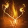
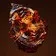
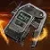

效果
| 名称 | 图标 | 说明 |
|---|---|---|
| 治愈 | 每层治愈在 0.1 秒内恢复 60 [30] 生命值。 两次激活之间有 1 秒冷却，冷却期间再次激活不恢复生命值。 | |
| 焰灵 | 烈日元素拾取物。 拾取提供 11.25% 手雷技能能量。 自己生成的焰灵对盟友不生效。 停留 25 秒后消失，两次生成之间有 5 秒冷却。 | |
| 焕光 | 武器伤害提高 20% [10%]，持续 10 秒，默认最长可延到 15 秒。黄金枪的伤害同样受它影响。 重新施加焕光会把持续时间刷新到此前达到过的最长值。 焕光激活期间对勇士的武器伤害额外提高 10%。 | |
| 恢复 | 持续恢复生命值，效果不可中断，默认最长持续 15 秒。 1 层 = 35 [17.5] 生命值/秒 ｜ 2 层 = 50 [25] 生命值/秒。 治疗效果不与治愈裂痕叠加。 重新施加恢复把持续时间刷新到此前的最长值，并保留最高层数；若新的持续时间更长则采用新的。 至高天与慈悲属于延长效果，不计为重新施加；把持续时间延长到 15 秒以上时会被压回 15 秒。 | |
| 点燃 | 在 8 米半径内引爆，造成 676 [120 守护者 ｜ 250 构造体] 烈日伤害，范围内无衰减。 点燃会清空全部灼烧层数，并在 1.6 秒内无法重新施加灼烧。 若最初施加灼烧的来源本身带伤害提升，点燃伤害也随之提高——例如真理之容 5 层 + 融合手雷 = 点燃伤害提高 100%。 近战伤害增益不缩放点燃与灼烧。 势不可挡勇士受到点燃伤害时进入眩晕。 | |
| 灼烧 | 焦灼的战斗人员在 0.5 秒后开始受伤，此后每 0.56 秒跳一次伤害（第 2 跳有 0.93 秒延迟）。 层数攒到 100 层时清空并触发点燃。 每跳伤害 = 2.7 + 0.175 × 层数，非战斗人员再提高 20%： 1 层 = 3 ｜ 30 层 = 5 ｜ 50 层 = 6.5 ｜ 60 层 = 7.21 ｜ 80 层 = 8.64。 灼烧伤害不致命。 攒到 60 层以上时每跳多打 2.5%，界面上显示为黄色伤害数字。 衰减： 持续 2.3 秒后开始掉层，每 0.04 秒掉 1 层（约 25 层/秒），具体随难度浮动。 | |
| 灼烧效果伤害缩放 | 灼烧与点燃的伤害能被 Perk 和异域装备提高，但最初点燃它的那个来源决定它算哪一类伤害。 用武器施加（辉耀炽热、燃烧野心，或汤米的火柴盒、条件终局这类异域武器）： 算武器伤害，吃武器增益与只加武器的活动修正——其它伤害 Perk、武器属性、焕光、烈日武器激涌。 新装备加成对所有武器永久生效，所以对战斗人员的灼烧效果伤害始终比预期高 5%。 用技能施加（融合手雷、光焰之井）： 算烈日技能伤害，只吃手雷（真理之容）与超能（烈焰之心）各自的伤害提升。 近战伤害增益与 100 以上的近战属性都不提高它。 提高全部技能伤害的效果，对所有由烈日技能施加的灼烧效果都生效。 提高全部烈日伤害的活动修正（如烈日激涌）对灼烧效果一律生效，不分来源。 |
碎片
| 碎片 | 图标 | 说明 | 属性变化 |
|---|---|---|---|
| 骨灰余烬 | 施加的灼烧层数提高 50%，向上取整——3 层 → 5 层，40 层 → 60 层。 受它影响的来源会在常规层数旁用小字标出增量，例如 40+20。 部分来源不按 50% 走：卡利班之手 60+0、汤米的火柴盒 15+5、焚天者誓约 5+5。 | — | |
| 光线余烬 | 烈日超能技能的弹体追踪更强。 目前只对利刃弹幕飞刀、黎明弹体，以及烈焰之歌弹体 ? 生效。 | +10 超能 | |
| 仁慈余烬 | 为盟友赋予治愈、焕光、恢复或复活时： 手雷、近战与职业技能基础充能速度额外 +300%，持续 7 [4] 秒。 可触发： 光焰之井 ｜ 治愈裂痕 ｜ 流明与汇编器战靴的尊贵追踪器 ｜ 朱雀意图之刃的追踪器 ｜ 珍贵伤痕击杀 ｜ 烈日支援框架的恢复爆发。 光焰之井追踪器经装配工之靴强化后，可以自己触发一次仁慈。 不触发：强能裂痕、阿尔法·鲁皮之脊的治疗脉冲、蛾守护者的覆盖护盾飞蛾、非烈日支援框架自动步枪、护甲模组与 Perk、4 件套主动治疗。 | -10 手雷 | |
| 起泡余烬 | 点燃击杀按战斗人员等级提供手雷技能能量： T1 级战斗人员 8% ｜ T2 12.25% ｜ T3 16.5% ｜ T4 25% ｜ 20.75%。 | — | |
| 烧焦余烬 | 点燃爆炸对被它伤害的战斗人员施加 40+20 层灼烧。 对已被点燃的战斗人员不生效。 | +10 手雷 | |
| 燃烧余烬 | 烈日超能击杀触发点燃并生成焰灵。 光焰之井会让铸造者的武器伤害算作超能技能伤害，因此烈日武器击杀也计为烈日超能击杀。 | +10 近战 | |
| 至高天余烬 | 烈日击杀延长恢复与焕光，增益时长不超过 15 秒；已经超过 15 秒时击杀反而会压回 15 秒。 T1 级战斗人员 +1.5 秒 ｜ T2 +2.25 秒 ｜ T3 +3 秒 ｜ T4 +6 秒 ｜ +3 秒。 | -10 生命值 | |
| 喷发余烬 | 点燃半径提高 25%，从 8 米到 10 米。 | +10 近战 | |
| 慈悲余烬 | 拾取焰灵： 提供 1 层恢复，持续 2+1 秒；已经生效时改为延长 2+1 秒。 计时超过 15 秒时拾取会压回 15 秒。 复活盟友时： 为自己与 ? 米内的盟友提供 1 层恢复，持续 5+2.5 秒。 | +10 生命值 | |
| 决心余烬 | 手雷击杀提供 1 层治愈。 | — | |
| 炽热余烬 | 击杀焦灼的战斗人员： 生成焰灵，并按等级提供近战技能能量。 T1 级战斗人员 8% ｜ T2 15% ｜ T3 17.5% ｜ T4 25% ｜ 20%。 | +10 职业 | |
| 焦燃余烬 | 对战斗人员施加灼烧后： 职业技能基础充能速度额外 +400%，持续 3 秒。 只有对尚未焦灼的战斗人员施加时才触发；战斗人员若死于这一击则不触发。 | — | |
| 抚慰余烬 | 施加给自己的恢复与焕光持续时间延长 50%。 受它影响的来源会在常规时长旁用小字标出增量，例如 10+5 焕光、4+2 恢复。 | — | |
| 回火余烬 |  | 烈日武器击杀： 为自己与 15 米内的盟友提供 1 层回火余烬，持续 8 秒，最多 3 层。 回火余烬： +20 空中效率。 激活期间烈日武器击杀生成焰灵。 按层数提供 +20 / +40 / +60 生命值属性。 | -10 职业 |
| 火炬余烬 | 充能近战命中为自己与 8 米内的盟友提供焕光，持续 8+4 秒。 | -10 手雷 | |
| 惊奇余烬 | 用点燃在 ? 秒内击杀 2 名战斗人员： 生成一枚能量球，提供 2.5% 超能能量。 生成能量球后有 10 秒冷却。 | +10 生命值 |
手雷技能
| 手雷 | 图标 | 说明 | 基础冷却 |
|---|---|---|---|
| 烈焰手雷 | 重型弹道 ｜ 扫描 接触时扫描 8.5 米视线内最多 4 名战斗人员，1 秒后向它们发射烈日光能矢弹。 每发矢弹造成 337 [65] 伤害并施加 20+10 层灼烧。 火焰之触： 扫描范围提高到 12 米，最多瞄准 5 名战斗人员。 | 基础冷却 83.8 秒 回复倍率 1× | |
| 融合手雷 | 轻型弹道 ｜ 轻微追踪 ｜ 粘附 附着到战斗人员或表面上，短暂延迟后爆炸。 爆炸在 6 米内最多造成 738 [130] 伤害并施加 40+20 层灼烧。 火焰之触： 0.5 秒后再爆一次，在 8 米半径内最多造成 851 [50] 伤害。 两次合计最多 1589 [180] 伤害，同样施加 40+20 层灼烧。 | 基础冷却 95.8 秒 回复倍率 1× | |
| 治愈手雷 | 超轻型弹道 ｜ 强盟友追踪 为接触点 7.5 米内的自己与盟友施加 1 层治愈，并生成一枚持续 7.5 秒的恢复能量球。 恢复能量球拾取时施加 1 层恢复，持续 4+2 秒；拾取半径 7.5 米，自身 100 生命值。 火焰之触： 治愈改为 2 层，恢复能量球改为 2 层恢复，持续 4+2 秒。 | 基础冷却 119.7 秒 回复倍率 0.875× | |
| 燃烧手雷 | 中型弹道 速度降到足够低后爆炸，爆炸前有短暂延迟。 爆炸在 8 米内最多造成 814 [130] 伤害并施加 60+30 层灼烧。 战斗人员处在手雷 1 米内时伤害提高 31.5%，达到 1202 [173]。 | 基础冷却 137.7 秒 回复倍率 0.75× | |
| 烈日手雷 | 中型弹道 ｜ 持续伤害场域 接触时对 5 米内的战斗人员最多造成 63 [20] 伤害并施加 17+4.5 [10+10] 层灼烧，同时生成一枚烈日信号弹。 信号弹生成 1 秒后才开始造成伤害，此后每 0.267 秒对 4 米半径内的战斗人员造成 78 [25] 伤害，共 13 次，4 秒内合计最多 1014 [325]。 施加节奏： 0.75 秒后 1 层灼烧，此后每 0.533 秒 7.5+2.5 层，持续时间内最多 53+27 层。 场域内不会立刻烧起来，信号弹失效时才对其中的战斗人员最多施加 17+13 层。 火焰之触： 持续时间延长到 6 秒，信号弹周围每隔 ? 秒抛出岩浆能量球，每个造成 125 [50] 无衰减伤害。 | 基础冷却 199.5 秒 回复倍率 0.5× | |
| 蜂群手雷 | 中型弹道 ｜ 追踪器 接触时释放 9 枚追踪无人机。 无人机追逐 7 米内的战斗人员，接触即爆；没打到目标则 10–11 秒后自爆。 每枚造成 58 + 54 [8 + 8] 伤害并施加 5+3 层灼烧。 9 枚全中最多合计 1008 [144] 伤害与 45+27 层灼烧。 | 基础冷却 137.7 秒 回复倍率 0.75× | |
| 铝热手雷 | 中型弹道 接触时发出一道烈日波形，此后每 1.45 秒再发一道，最多 3 道。 每道波形飞行最远 20 米，最多造成 246+206 [80 + 50] 伤害并施加 10+10 层灼烧。 4 道全部无衰减命中时最多合计 1808 [360] 伤害与 40+40 层灼烧。 | 基础冷却 159.6 秒 回复倍率 0.625× | |
| 感应手雷 | 中型弹道 ｜ 壁挂 ｜ 粘附 附着到表面上，每 ? 秒投射一次激光；粘到非表面会立刻触发。 战斗人员进入扫描锥（延伸 10 米、半径 7 米）时触发，或附着 10 秒后自动触发。 触发 1 秒后（或被摧毁时）在 ? 米内爆炸，最多造成 805 [140] 伤害并施加 40+20 层灼烧。 | 基础冷却 159.6 秒 回复倍率 0.625× |
 猎人
猎人
| 名称 | 图标 | 说明 | 冷却与槽位 |
|---|---|---|---|
| 职业技能 | |||
| 特技闪身 | 空中翻跃。 落地时： 为自己与 10 米内的盟友提供焕光，持续 10+5 秒。 对 6.5 米内的战斗人员最多造成 40 [20] 烈日伤害。 | 基础冷却 56 [148.4] 秒 回复倍率 0.5× | |
| 近战技能 | |||
| 飞刀戏法 | 扇形投出 3 把烈日飞刀。 每把造成 257 [38] 伤害（精准倍率 1.3×）并施加 20+10 层灼烧。 3 把全部精准命中时最多合计 1002 [147] 伤害与 60+30 层灼烧。 | 基础冷却 118.8 秒 回复倍率 0.9× | |
| 轻质飞刀 | 固有 2 次技能充能。 快速投出一把以 40 米/秒飞行的轻质飞刀。 造成 408 [100] 伤害，精准倍率 1.5×。 精准命中提供焕光，持续 10 秒。 | 基础冷却 145.2 秒 回复倍率 0.8× | |
| 感应爆炸飞刀 | 快速投出一把可附着表面最多 14 秒的爆炸刀。 探测到 5 米内的战斗人员时爆炸，直接粘到战斗人员身上也立即爆炸。 接触造成 306 [20] 伤害（精准倍率 1.3×）。 引爆在 6 米内最多造成 405 [100] 伤害。 | 基础冷却 161.3 秒 回复倍率 0.7× | |
| 权衡飞刀 | 加重飞刀，投出前需蓄力 0.65 秒，整套动画 1.55 秒。 造成 571 [140] 伤害，精准倍率 1.5×。 精准击杀提供一次职业技能充能。 命中焦灼的战斗人员直接触发点燃。 | 基础冷却 197.9 秒 回复倍率 0.6× | |
| 超能技能 | |||
| 利刃弹幕 | 伤害抗性：90%? [49%] 释放两轮各 7 把追踪飞刀，共 14 把；装备星相「击败他们」时每轮多 3 把，共 20 把。 飞刀接触时嵌入，造成 99 [没多少?] 伤害，0.5 秒后引爆。 每把引爆在 4.25 米内额外造成最多 560 [基本团灭?] 伤害并施加 ?+? 层灼烧。 全部命中并引爆时合计最多 8512 [死] 伤害；配合击倒可达 12160 [死 ×1.43]。 | T4 级超能 基础冷却 455 秒 | |
| 黄金枪：死亡射击 | 伤害抗性：60% [0%]，带击倒时 66% [15%] 基础持续：12 秒，或每秒消耗 8.34% 超能能量 6 发装。每发造成 1453 [393] 伤害并施加 40+10 层灼烧，本技能没有精准命中。 伤害从 26 米开始衰减，100 米处降到 34.5%；瞄准变焦不影响衰减（1× 瞄准标量）。 焕光的加成对它生效。 超能击杀会补一发子弹并返还超能能量： 首次约 80%，此后每次击杀递减约 10%，最低约 12%。 | T2 级超能 基础冷却 556 秒 | |
| 黄金枪：神枪手 | 伤害抗性：60% [0%] 基础持续：12 秒，或每秒消耗 8.34% 超能能量；带击倒时 16 秒、每秒 6.25% 3 发装。每发造成 1574 [426] 伤害并施加 40+10 层灼烧，精准倍率 2×。 焕光的加成对它生效。 精准命中提供 1 层列队（最多 2 层）并生成 2 枚能量球，增益持续到超能结束。 列队 1 层 ｜ 伤害提高 45.8%，被动消耗降低 25%?。 列队 2 层 ｜ 伤害提高 90%，被动消耗降低 50%?。 精准命中生成的能量球回能： 非战斗人员 3.57% ｜ 2.85% ｜ + 噬星者之鳞 2.5%。 | T2 级超能 基础冷却 556 秒 | |
| 星相 | |||
| 速射神枪 | 准星悬停在 27 米内的战斗人员附近会给它打上标记，直到离开视线。 职业技能被替换为速射神枪闪身，冷却覆盖为射手闪身的数值，并触发已装备职业技能的效果。 可以在半空中使用，触发一阵速度爆发。 使用时在 1.2 秒内最多打出 3 发，平均 150 发/分钟（射速随帧率变化）。 每发灼热射击造成 354 [21] 伤害并施加 20+10 层灼烧；3 发全中提供 1 层治愈。 焕光使速射神枪对战斗人员的伤害提高 20%。空中闪身的焕光在开火之前就已施加。 伤害随超过 100 的职业属性缩放，200 属性时最多 +65% [10%]。 与星界夜鹰没有互动。 | ||
| 火药博弈 | 击杀为简易爆炸物蓄力，攒够 6 次充能即可使用。 武器击杀 1 [2] ｜ 点燃与灼烧 3 [4] ｜ 技能击杀 4 ｜ 超能 6。 手雷技能被替换为棍上点燃： 被射击或 3 秒后触发点燃，伤害提高 50%。 射击炸药会让它的伤害提高 50% [5%]、半径提高 ?% 至 ? 米，并释放 9 枚追踪子弹药，每枚最多造成 80 [?] 伤害。 激活后有 6 秒冷却，冷却期间的击杀不提供充能。 | ||
| 击败他们 | 焕光期间： 充能近战技能击杀在 0.2 秒延迟后返还 100% 近战技能能量；若焕光正是由这一击带来的，同样返还。 强化超能： 神枪手黄金枪持续时间 +4 秒 ｜ 死亡射击黄金枪获得 15% 伤害抗性 ｜ 利刃弹幕每轮多投 3 把飞刀。 超能激活时提供 1 层治愈。 | ||
| 各就各位 | 精准击杀、精准命中或使用职业技能时： 为自己与 15 米内的盟友提供各就各位，持续 12 秒，最多 10 层。 精准击杀与手炮精准命中给 2 层 ｜ 职业技能使用给 1 层 ｜ 普通精准命中给 1 层（对有 1 秒内置冷却）。 每层提供 +5 武器属性，以及填装速度与换弹时长的加成；满 10 层为 +50 武器属性、+? 填装速度，换弹时长 ×0.?。 满 10 层时，击杀提供 1 层恢复，持续 3+1.5 秒。 | ||
泰坦
| 名称 | 图标 | 说明 | 冷却与槽位 |
|---|---|---|---|
| 近战技能 | |||
| 战锤打击 | 与其它肩撞类技能共用的规则： 需要冲刺 1.25 秒；未命中战斗人员时消耗 15% 近战技能能量；开火状态下无法在滑铲期间使用；被肩撞直接命中的守护者近战突进失效 0.5 秒。 向前突进 6.8 米，自动瞄准射程内的战斗人员。 命中战斗人员： 造成 878 [90] 直击伤害并施加 40+20 层灼烧。 对命中目标后方 7 米内的战斗人员造成 586 [60] 径向伤害。 用战锤打击杀死被直接命中的战斗人员会触发点燃。 | 基础冷却 131.7 秒 回复倍率 0.8× | |
| 投掷飞锤 | 快速投出一把烈日飞锤，造成 539 [90] 伤害。 伤害随飞行距离提高，35 米以上最多 +36%，与一切效果相乘叠加： 2 米以内 基础 ｜ 2–4 米 +6% ｜ 5–8 米 +12% ｜ 9–16 米 +18% ｜ 17–25 米 +24% ｜ 26–34 米 +30% ｜ 35 米以上 +36%。 飞锤可以从地面拾回，提供 121.5% 近战技能能量；命中后拾回还提供 1 层治愈。 落地 10 秒后自动爆炸，最多造成 325 [60] 伤害，爆炸计为近战伤害。 | 基础冷却 131.7 秒 回复倍率 0.9× | |
| 超能技能 | |||
| 燃烧锻锤 | 伤害抗性：90% [53%] 基础持续：25 秒，或每秒消耗 4% 超能能量 装备无敌索尔时，扎根施放会生成一团烈日耀斑，被动消耗降低 40%，持续时间提高到 42 秒（每秒 2.4%）。 轻攻击 ｜ 消耗 4% 超能能量。 旋转攻击造成 4 段 111 [?] 伤害，两次之间有 0.67 秒延迟。 连续命中获得 40% 攻速加成，直到断连为止。 累计命中 10 次生成一个旋风，每次超能最多生成 1 个。 重击 ｜ 消耗 8% 超能能量。 向下猛击并释放一枚接触即爆的追踪弹，造成 276 [?] 伤害并生成旋风。 旋风每 0.2 秒造成 24 [16] 伤害，每 0.56 秒施加 3+2 层灼烧，持续 4 秒。 | T3 级超能 基础冷却 500 秒 | |
| 烈焰战锤 | 伤害抗性：90% [51%] 基础持续：21 秒，或每秒消耗 4.75% 超能能量 轻攻击 ｜ 消耗 12% 超能能量。 投出接触即爆的飞锤，最多造成 445 [?] 伤害；两次投掷之间有 1.5 秒延迟。 爆炸释放 4 片弹片，每片最多造成 396 [?] 伤害。飞锤在空中 0.7 秒后视觉上升空，弹片增加到 5 片。 凤巢 ｜ 被动消耗降低 20%，持续时间提高到 26.25 秒（每秒 3.81%），轻攻击改为消耗 7.5% 超能能量，投掷间隔降到 1 秒。 罗蕾莱辉煌头盔 ｜ 被动消耗降低 40%，持续时间提高到 35 秒（每秒 3.63%），轻攻击消耗 8.2% 超能能量，投掷间隔降到 1 秒。 两种异域的数值都假设无敌索尔增益 100% 持续，实战未必做得到。 | T2 级超能 基础冷却 556 秒 | |
| 烈焰战锤（无敌索尔） | 伤害抗性：90% [51%] 基础持续：16.5 秒，或每秒消耗 6.06% 超能能量 扎根施放时生成一团烈日耀斑。 轻攻击 ｜ 消耗 9% 超能能量。 投出的飞锤造成 483 [?] 伤害并在接触时生成烈日耀斑；两次投掷之间有 1.5 秒延迟。 爆炸释放 3 片弹片，每片最多造成 429 [?] 伤害。 站在耀斑里： 被动消耗降低 40%，持续时间提高到 27.5 秒（每秒 3.63%），轻攻击消耗降到 5.5% 超能能量，投掷间隔降到 1 秒。 | T2 级超能 基础冷却 556 秒 | |
| 星相 | |||
| 神圣献祭 | 滑铲时按［近战技能］： 向前发出一道 20 米的烈日能量波形，造成 40 [30] 伤害并施加 40+20 层灼烧。 未处于猛击状态时只消耗 50% 近战技能能量。 开火状态下无法在滑铲期间使用。 由神圣献祭腾空后按［近战技能］： 猛击地面，形成第二道更宽的波形向前 20 米，并碎裂水晶。 对非焦灼战斗人员造成 486 [120] 伤害。 命中焦灼的战斗人员则造成 472.5 [50] 伤害并触发点燃。 近战动画期间对非近战伤害提供 25% 伤害抗性。 | ||
| 咆哮烈焰 |  | 烈日技能击杀与点燃击杀： 提供 1 层咆哮烈焰，持续 20 秒，最多 3 层；再次击杀刷新时长。 每层提高烈日技能伤害： 近战伤害 +67% / +133% / +200%。 手雷与超能技能伤害 +20% [13%] / +44% [28%] / +73% [44%]。 咆哮烈焰激活期间，非充能近战命中施加 30+10 层灼烧并计为充能近战命中。 | |
| 盾爆 |  | 职业技能被覆盖为遥控引爆器： 放下屏障后再次使用即引爆，产生强力击退的爆炸。 爆炸对部分效果计为摧毁构造体；被自己的爆炸命中会触发屏障加速，落地前还能继续使用战锤打击。 遥控引爆器对多数效果计为职业技能使用，但职业属性超过 100 时不提供覆盖护盾。 放置巍峨屏障时： 屏障会先向前滑行最多 20 米并逐渐减速。 屏障直击伤害提高到 328 [?] 并施加 20+10 层灼烧（同一战斗人员每 2 秒只触发一次）。 位于集结屏障后方时： 为动能与烈日武器提供灼热子弹。 屏障激活期间被动积攒盾爆进度（高墙 34% ｜ 集束 10%），造成伤害按每秒约 100 点伤害额外积攒。 引爆时： 最多在 ? 米内造成 550 [?] 伤害并施加 50+25 层灼烧，自身伤害降低到 ?。 向 40? 米内的战斗人员抛出烈日弹片，每片造成 71 [?] 伤害并施加 5+5 层灼烧。 盾爆进度越满爆炸伤害越高，满进度时 +50%，并额外释放 3 道呈锥形扩散、最远 15 米的烈日波形，每道造成 141 [?] 烈日伤害。 星相伤害随超过 100 的职业属性缩放，200 属性时最多 +65%[?%]。 | |
| 无敌索尔 | 烈日技能击杀、击杀焦灼的战斗人员，以及烈焰战锤接触，都会生成烈日耀斑，持续 ? 秒。 站在耀斑里可以刷新它的持续时间，最长 12 秒。 耀斑提供无敌索尔持续 5 秒，并给 1 层恢复持续 5+2.5 秒。 耀斑每 0.167 秒造成 60 [22] 伤害并施加 5+3 层灼烧。 无敌索尔期间： 手雷与近战基础充能速度额外 +100%。 超能被动消耗降低 40%。 | ||
 术士
术士
| 名称 | 图标 | 说明 | 冷却与槽位 |
|---|---|---|---|
| 职业技能 | |||
| 凤凰俯冲 | 俯冲，为自己与 9 米内的盟友施加 2 层治愈。 炙热升腾激活时： 俯冲改为施加 2 层恢复，持续 3+1.5 秒。 落地对 6.5 米内的战斗人员造成 100 伤害并施加 40+20 层灼烧。 | 基础冷却 79.6 秒 回复倍率 0.8× | |
| 近战技能 | |||
| 星界之火 | 发出 3 团追踪的烈日爆炸，呈螺旋前进。 每团最多造成 150 [35] 伤害并施加 10+5 层灼烧，范围 ? 米。 3 团全中最多合计 450 [105] 伤害与 30+15 层灼烧。 | 基础冷却 162.6 秒 回复倍率 0.7× | |
| 焚烧响指 | 扇形生成 5 发燃烧花火。 每发飞行 ? 米后爆炸，在 ? 米内最多造成 90 [27?] 伤害并施加 20+10 [10+5] 层灼烧。 5 发全中最多合计 450 [135?] 伤害与 100+50 [50+25] 层灼烧。 | 基础冷却 119.8 秒 回复倍率 0.9× | |
| 超能技能 | |||
| 烈焰之歌 | 伤害抗性：90% [~50%?] 基础持续：25 秒，或每秒消耗 4% 超能能量 铸造者获得 +100 手雷、+100 近战、+100 职业属性，以及焕光与灼热子弹；其武器击杀计为超能击杀（武器伤害不计为技能伤害）。 15 米内的盟友获得 30% [?%] 伤害抗性、灼热子弹，以及手雷、近战与职业技能每秒 15% 的固定能量。 超能结束时补满手雷与近战技能。 灼热子弹： 非持续伤害的动能或烈日武器命中会施加灼烧，层数与冷却随武器类型而定。 5+0 层 / 0.2 秒 ｜ 自动步枪、微型冲锋枪。 5+5 层 / 0.2 秒 ｜ 机枪、追踪步枪。 10+5 层 / 0.3 秒 ｜ 手炮、脉冲步枪、斥候步枪、手枪。 15+5 层 / 0.4 秒 ｜ 融合步枪、偃月、霰弹枪、狙击步枪、刀剑。 20+10 层 / 0.6? 秒 ｜ 弓箭、重型榴弹发射器、特殊榴弹发射器、线性融合步枪（含劲弩）、火箭发射器。 同时命中多名战斗人员时只烧其中一名。 手雷技能 ｜ 消耗 4.8% 超能能量，两次之间有 2 秒冷却。 发出一团接触即爆的烈日鬼火，最多造成 685 [?] 伤害并施加 40+20 层灼烧，有 ? 点构造体生命值。 若 15? 米内还有战斗人员，会在接触位置再生成一团去追尚未伤到的最近战斗人员，每次最多多生成 3 团。 装备炙热升腾时消耗一团鬼火，为自己与 9 米内的盟友提供 3 层治愈与 2 层恢复，持续 4+2 秒。 近战技能 ｜ 消耗 2.4% 超能能量，两次之间有 1.75 秒冷却。 星界之火改为发出 5 团爆炸，每团最多造成 200 [87] 伤害并施加 10+5 层灼烧。 焚烧响指改为释放 7 发花火，每发最多造成 155 [41] 伤害并施加 20+10 [10+5] 层灼烧。 装备焚烧响指时对近战突进距离内的战斗人员使用自动近战，会打出强化基础近战，造成 1000 [456] 烈日伤害并施加 60+30 层灼烧，同时消耗超能能量与一次近战技能充能。 职业技能 ｜ 消耗 6% 超能能量，两次之间有 2.85 秒冷却。 按所选职业技能发挥作用，以超能能量换取快速充能。 | T2 级超能 基础冷却 556 秒 | |
| 黎明 | 伤害抗性：90% [51%] 基础持续：24 秒，或每秒消耗 4.167% 超能能量 轻攻击 ｜ 消耗 6.5% 超能能量，发射黎明弹体。 弹体造成 426 [?] 直击伤害，受到伤害时爆炸，最多造成 598 [?] 溅射伤害（衰减至 0%），在 5 米内施加 50+0 层灼烧，并在身后拉出一道火焰长流。 火焰条纹向前飞行；若弹体飞行至少 12 米，宽度从约 4 米放大到 9 米，命中最多造成 292 [?] 伤害。 允许无冷却使用强化伊卡洛斯突进，每次消耗 4.2% 超能能量。 凤凰俯冲被强化： 最多造成 642 [220?] 伤害（最低降至 292 [?]），并在 6 米半径内施加 60+30 层灼烧，最大衰减处仍有 45% 伤害。 其伤害吃超能伤害提升。 | T2 级超能 基础冷却 556 秒 | |
| 光焰之井 | 放下一口持续 30 秒的光焰之井： 为铸造者恢复 300 生命值。 对 8.5 米内的战斗人员最多造成 150 伤害并施加 40+20 层灼烧。 生成 3 枚能量球，每枚提供 3.6% 超能能量。 持续时间随超能属性缩放，200 超能时最长 40 秒。 井本身是拥有 800 生命值的构造体，可以被冻结，也会被碎裂伤到；战斗人员对它只造成 0.25 倍伤害。 它向 6 米内的铸造者与盟友投射增益光环，离开光环时提供焕光持续 8+4 秒。 站在井里的： 伤害提高 25%。 对战斗人员获得 20% 伤害抗性（对 10%）。 对特殊与威能武器及技能获得 50% 伤害抗性，主武器 40%。 免疫冰影效果，每秒恢复 50 生命值。 进入时会移除已有的恢复。 铸造者在井里造成的武器伤害计为超能技能伤害，井内击杀最多生成 5 枚能量球。 | T4 级超能 基础冷却 455 秒 | |
| 星相 | |||
| 炙热升腾 | 被动 +20 空中效率，并允许滑翔期间使用武器与技能。 空中击杀按等级提供近战技能能量： T1 级战斗人员 20% ｜ T2 25% ｜ T3 35% ｜ T4 50% ｜ 50%。 按住［手雷］： 消耗一次手雷技能充能进入炙热升腾，并为自己与 9 米内的盟友释放 2 层治愈。 消耗治愈手雷时提升到 3 层。 消耗火焰之触强化过的治愈手雷还额外给 1 层恢复，持续 4+2 秒。 消耗烈焰之歌的鬼火则给 3 层治愈与 2 层恢复。 炙热升腾： 提供 +50 空中效率与一种随移动技能变化的改良滑翔，持续 15 秒。 均衡滑翔 ｜ 强化方向控制与初始爆发。爆发滑翔 ｜ 强化方向控制与占领模式。专注滑翔 ｜ 强化初始爆发。 激活期间战斗人员对玩家的瞄准精度下降。 改良滑翔的维持与激活消耗降低 99%，最大滑翔时长延长 100 倍，并在 25 米内的雷达上标出自己的位置。 激活期间的空中击杀延长时长，最长 30 秒： T1 +5 秒 ｜ T2T3 +10 秒 ｜ T4 +15 秒 ｜ +5 秒。 消耗手雷总是把时长覆盖为 15 秒，即使原本更长。 | ||
| 地狱火 | 使用职业技能提供地狱火，持续 20 秒。 期间每 1.35 秒向最远 32 米外的战斗人员抛出一颗灼热的烈日弹体，最多造成 217 [38] 烈日手雷技能伤害，并在 4 米半径内施加 30+10 层灼烧。 可以触发手雷技能的交互效果。 地狱火施加的灼烧效果不随手雷伤害缩放。 | ||
| 伊卡洛斯突进 | 水平冲刺 8 米，黎明期间距离提高 25%，使用后有 4 秒冷却。 炙热升腾激活时，或装备焚烧响指近战的烈焰之歌期间： 额外获得一次充能且两次同时充能，但冷却提高到 5 秒。 装备星界之火近战时，烈焰之歌中不会获得 2 次充能。 空中用武器或超能击杀推进计数，满 100% 提供 1 层治愈： 34% ｜ 67% ｜ 100% ｜ 67%。 | ||
| 火焰之触 | 强化四种手雷： 治愈手雷 ｜ 提供 2 层治愈与 2 层恢复，持续 4+2 秒。 烈焰手雷 ｜ 搜寻半径提高 50% 至 12 米，最多瞄准 5 名战斗人员。 烈日手雷 ｜ 停留时间延长 2 秒，并释放岩浆能量球，每个造成 125 [50] 无衰减伤害。 融合手雷 ｜ 0.5 秒后再爆一次，在 8 米半径内最多造成 851 [50] 伤害。 | ||